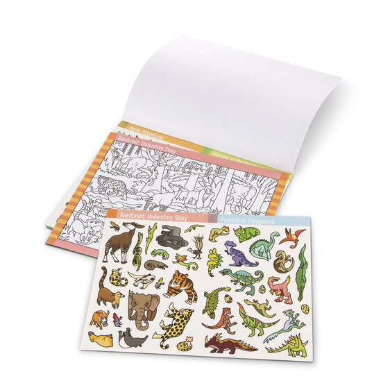

Available
Sticker Pad - Seek and Find - Animal
Sticker Pads
R170Seek and find sticker pad with animal scenes to color and stickers to match to hidden objects 400+ full-color stickers and 14 scenes to color with pencils, markers, or crayons Sticker pages are labeled and color-coded to match scenes
Enquire about this product

Sticker Pad - Seek and Find - Animal at Kids Corner KZN
Sticker Pad - Seek and Find - Animal is part of our Sticker Pads collection. Kids Corner KZN stocks toys for learning, pretend play, creative play, gifting and everyday childhood discovery in South Africa.
Browse more Sticker Pads toys